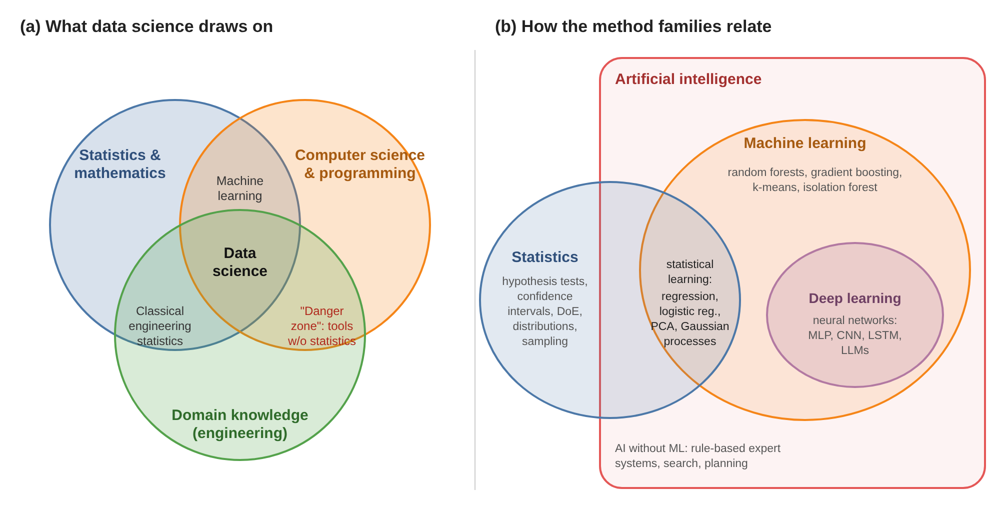
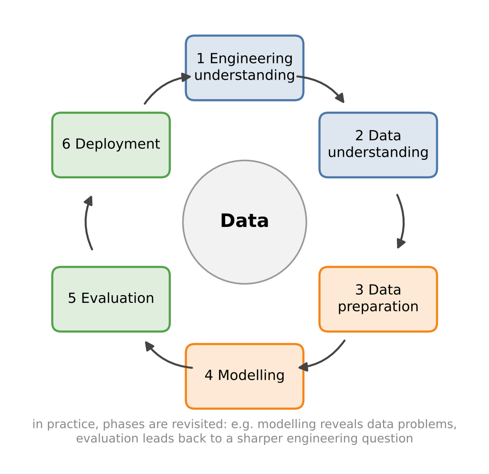

# Setup: works locally and in Google Colab
import importlib.util, subprocess, sys
for pkg in ["ucimlrepo"]:
if importlib.util.find_spec(pkg) is None:
subprocess.run([sys.executable, "-m", "pip", "install", "-q", pkg], check=True)
import numpy as np
import pandas as pd
import matplotlib.pyplot as plt
import seaborn as sns
sns.set_theme(style="whitegrid")1 The Data Science Workflow in Engineering
Engineers have always worked with data: test bench measurements, calibration curves, quality records, field failures. What has changed is the amount and the variety of data. A modern production line logs hundreds of signals per second, a wind turbine reports its state every few seconds, and simulation studies produce thousands of runs. Data science provides the methods to turn such data into decisions.
This chapter sets the stage. We look at what makes data science in engineering special, introduce a process model that structures every project, and get to know the Python tools we will use throughout the course. Finally, we load and inspect our first two datasets – one clean table from a public repository and one raw sensor file, as they typically arrive in practice.
Engineering question: Can we predict the electrical power output of a combined cycle power plant from ambient conditions alone?
Learning goals. After this chapter you can
- explain how we use the terms statistics, machine learning, deep learning, artificial intelligence and data science, and where they overlap,
- describe the phases of a data science project (CRISP-DM) and apply them to an engineering problem,
- distinguish data science tasks such as description, prediction, diagnosis and optimisation,
- use the Python data stack (NumPy, pandas, Matplotlib, seaborn) in Jupyter or Google Colab,
- load tabular data from a public repository and from a raw sensor file,
- produce a first overview of a dataset (size, types, summary statistics, pair plots) and interpret it.
Datasets in this chapter
1.1 What is data science in engineering?
Put briefly, data science is the systematic extraction of knowledge and decisions from data. It combines statistics (how to reason under uncertainty), computer science (how to process data and fit models efficiently) and domain knowledge (what the data mean and which questions matter). How this relates to statistics, machine learning and AI is sorted out in the next section.
The third ingredient is where engineers have a decisive advantage. A data scientist without engineering background may find that the vibration level of a pump correlates with the time of day; an engineer knows that this is because the pump runs at higher load during the day shift – and asks the right follow-up question.
Typical tasks fall into four groups:
| Task | Question | Engineering example | Chapters |
|---|---|---|---|
| Description | What happened? | Distribution of tensile strength in a batch | 2, 3 |
| Inference | Is the effect real? | Did the new supplier change the scrap rate? | 4, 5 |
| Prediction | What will happen? | Remaining useful life of a bearing, tomorrow’s grid load | 5–8, 11, 12 |
| Diagnosis / detection | What is wrong? | Which fault type? Is this run abnormal? | 7–10 |
Engineering data have some characteristic properties that we will meet again and again:
- Physics behind the data. Relationships are often known in principle (energy balance, material laws). Good models use this knowledge instead of ignoring it.
- Rare events. Failures and defects are – fortunately – rare. This makes them hard to learn from (Chapter 7).
- Time and sequence. Sensor data are time series. Neighbouring values are not independent, which has consequences for validation (Chapter 11).
- Measurement chains. Every value went through sensor, amplifier, A/D converter, logging system. Each step can introduce errors, offsets, gaps and wrong units (Chapter 2).
- High cost of errors. A wrong prediction can mean an unplanned standstill or a safety issue. Uncertainty must be quantified and communicated.
1.2 Statistics, machine learning, deep learning, AI: sorting the terms
You have certainly heard all of these terms – and probably noticed that they are used inconsistently. Product brochures call a linear regression “AI”, job advertisements use “data science” and “machine learning” interchangeably, and research communities draw the borders differently. There is no official definition. For this course we therefore fix working definitions: not the only possible ones, but clear enough to know what we are talking about.
Working definitions used in this course
- Statistics is the science of learning from data under uncertainty: collecting data (sampling, design of experiments), describing them, and drawing conclusions with a quantified uncertainty (estimates, confidence intervals, tests). Its focus is on understanding the process that generated the data.
- Machine learning (ML) is the field of algorithms that learn a task from examples instead of being explicitly programmed. Its focus is on predicting well on new, unseen data; models are judged by their performance on held-out test data.
- Deep learning (DL) is the part of machine learning that uses neural networks with many layers. Such networks learn suitable features from raw data (images, signals, text) by themselves, but typically need large amounts of data and computing power.
- Artificial intelligence (AI) is the broadest term: systems that perform tasks which would require intelligence if done by humans – perceiving, reasoning, planning, deciding. Machine learning is today the dominant approach to AI, but not the only one: rule-based expert systems or search and planning algorithms are AI without learning.
- Data science is the whole process of turning data into knowledge and decisions – from the question via data acquisition, preparation, analysis and modelling to communication and deployment. It uses statistics and machine learning as tools and requires domain knowledge to ask the right questions and interpret the answers.

The sketch shows two different views. Panel (a) describes data science by the competences it combines. Panel (b) arranges the method families – and data science does not appear there as a separate region, because it is defined by its process and purpose, not by a particular class of methods.
1.2.1 And what about AI?
“Artificial intelligence” is the oldest and the broadest of the terms – and today the most overloaded one. The field was founded in the 1950s with the goal of making machines perform tasks that require intelligence. For decades, the dominant approach was symbolic AI: knowledge was written down by experts as rules (“if bearing temperature > 90 °C and vibration rising, then …”) and combined by logical inference. Such expert systems worked in narrow domains but were laborious to build and brittle when reality deviated from the rules.
The alternative is to learn the behaviour from data – machine learning. Since around 2012, deep neural networks have achieved breakthroughs in image recognition, speech and text, and today’s generative AI (large language models such as the chatbots you know, image generators) is deep learning trained on enormous amounts of data. This is why “AI” in everyday language now usually means deep learning – but the term formally covers much more.
Two distinctions help to keep a clear head:
- Narrow vs. general AI. All AI systems in practical use, including large language models, are built for specific kinds of tasks. A system that matches humans across all intellectual tasks (artificial general intelligence) does not exist and remains a matter of research and debate.
- Legal vs. technical meaning. The EU AI Act defines “AI system” broadly – roughly, a machine-based system that infers from its input how to produce outputs such as predictions, recommendations or decisions – and attaches obligations depending on the risk of the application. For engineers this means that even a fairly simple machine learning model in a safety-relevant product can fall under regulation.
In this course we rarely use the word AI. We say precisely which method we use – a test, a regression, a random forest, a neural network – because that determines its assumptions, its limits and how it must be validated.
1.2.2 Where statistics and machine learning differ – and where they overlap
The boundary between statistics and machine learning is the most blurred one, because both fit models to data and many methods belong to both. The difference lies mainly in the goal and the culture – the statistician Leo Breiman famously spoke of “two cultures”:
| Statistics | Machine learning | |
|---|---|---|
| Main goal | understand and explain: which factors matter, how strong, how certain? | predict accurately on new data |
| Typical question | “Does the coolant temperature significantly affect the tool wear?” | “Which tool will fail within the next 100 parts?” |
| Models | few parameters, interpretable, explicit assumptions | flexible, often many parameters, “black box” accepted |
| Data | often small, carefully designed experiments | often large, observational (“whatever was logged”) |
| Validation | model assumptions, standard errors, tests | performance on held-out test data, cross-validation |
| Typical output | estimate ± uncertainty, p-value | prediction, score, class |
The overlap is large: linear and logistic regression, principal component analysis and Gaussian processes are standard tools in both communities – this common ground is often called statistical learning. In this course we use both perspectives: when we fit a regression model in Chapter 5, we look at coefficients and confidence intervals (statistics) and at the prediction error on test data (machine learning).
How this course is positioned
- Chapters 3–5 are mainly statistics: distributions, uncertainty, tests, regression, design of experiments.
- Chapters 6–11 are statistical learning and machine learning: model selection, classification, ensembles, unsupervised learning, signals and time series.
- Chapter 12 gives a first look at deep learning.
- AI methods without learning are not covered. All chapters together follow the data science process described next.
Pitfall: buzzwords instead of methods
When a supplier advertises an “AI-based” monitoring system, ask what is behind it: a threshold rule, a regression model, a random forest or a neural network? How was it validated, on which data, with which error rates? The label says nothing about the quality – the validation does.
1.3 The CRISP-DM process model
Data science projects fail more often for organisational reasons than for mathematical ones: the wrong question was answered, the data did not contain the necessary information, or the model was never used. Process models help to avoid this. The most widely used is CRISP-DM.
Definition: CRISP-DM
The Cross-Industry Standard Process for Data Mining (CRISP-DM) divides a data science project into six phases: business understanding, data understanding, data preparation, modelling, evaluation and deployment. The phases are passed through iteratively, not strictly one after another.

What the phases mean in an engineering context:
- Business / engineering understanding. Which decision should the analysis support? Who uses the result? What is the cost of a wrong answer, and what accuracy is good enough? Example: “Predict the power output with an error below 1 % so that the plant can commit its output to the day-ahead market.”
- Data understanding. Which data exist, how and where were they measured, with which sampling rate and accuracy? Are the relevant influences measured at all?
- Data preparation. Cleaning, merging data sources, resampling, handling missing values, constructing features. In practice this phase typically takes most of the time of a project.
- Modelling. Choosing and fitting statistical or machine learning models.
- Evaluation. Does the model answer the engineering question? Is it valid under all relevant operating conditions? Is it better than a simple baseline?
- Deployment. Integration into a process, a control system, a dashboard or a report – including monitoring whether the model stays valid.
Engineering practice: start with a baseline
Before fitting any sophisticated model, compute a trivial baseline: the mean value, yesterday’s value, or a simple physical formula. Every model must beat the baseline – otherwise its complexity is not justified. Surprisingly often, it does not.
Pitfall: answering the wrong question
A model that predicts when a machine fails is useless if maintenance can only be scheduled four weeks in advance and the model warns two days ahead. Clarify the decision and its time horizon in phase 1 – it determines which data and models make sense.
1.4 Tools: the Python data stack
Python has become the standard language for data science because of its readable syntax and a large ecosystem of open-source libraries. We use the following packages:
| Package | Purpose | Typical objects / functions |
|---|---|---|
| NumPy | n-dimensional arrays, linear algebra, random numbers | np.array, np.mean, np.linalg |
| pandas | tables and time series, reading and writing files | DataFrame, Series, read_csv, groupby, resample |
| Matplotlib | plotting (low level, full control) | plt.plot, plt.subplots |
| seaborn | statistical plots (high level) | sns.histplot, sns.pairplot, sns.boxplot |
| SciPy | statistics, signal processing, optimisation | scipy.stats, scipy.signal, scipy.optimize |
| statsmodels | statistical models with classical output tables | smf.ols |
| scikit-learn | machine learning with a uniform interface | fit, predict, Pipeline |
| PyTorch | neural networks (Chapter 12) | torch.nn |
The central data structure is the pandas DataFrame: a table whose columns have names and data types and whose rows have an index – for time series typically a timestamp. Most operations are vectorised: instead of looping over rows, we apply an operation to a whole column at once, which is shorter and much faster.
Working in Google Colab
All notebooks run in Google Colab in the browser. The first code cell of each chapter installs packages that are not preinstalled. Files you download or upload live only as long as the Colab session; save results you want to keep to Google Drive or download them.
1.5 Live coding: a first look at the power plant data
A combined cycle power plant (CCPP) combines a gas turbine with a steam turbine that uses the hot exhaust gas of the gas turbine. Its net electrical output depends on the ambient conditions: cold, dense air increases the mass flow through the gas turbine, and the condenser vacuum of the steam cycle depends on the cooling conditions.
The dataset contains 9,568 hourly averages collected over six years with the plant at full load. The variables are:
| Column | Meaning | Unit |
|---|---|---|
AT |
ambient temperature | °C |
V |
exhaust vacuum (steam turbine) | cm Hg |
AP |
ambient pressure | mbar |
RH |
relative humidity | % |
PE |
net hourly electrical energy output (target) | MW |
The package ucimlrepo downloads datasets from the UCI Machine Learning Repository directly into pandas.
from ucimlrepo import fetch_ucirepo
ccpp = fetch_ucirepo(id=294)
df = pd.concat([ccpp.data.features, ccpp.data.targets], axis=1)
df.info()df.info() tells us the number of rows, the column names, the data types and the number of non-missing values per column. Always check these first: a numeric column that was read as object (text) usually signals a problem in the file, for example a decimal comma or a text marker for missing values.
Next, summary statistics:
df.describe().T.round(2)
How to read
describe()
Look at each row with an engineer’s eye: Are minimum and maximum physically plausible? Is the mean close to the median (50 %)? A large difference indicates a skewed distribution or outliers. Is the standard deviation large or small compared with the measurement accuracy you would expect?
For the power plant, the ranges are plausible: ambient temperatures from just below freezing to the mid-thirties, pressures around 1013 mbar, and an output of roughly 420 to 500 MW. A pair plot shows all pairwise relationships at once:
Code
sns.pairplot(df.sample(1000, random_state=0), corner=True, plot_kws={"s": 8, "alpha": 0.5})
plt.show()Discussion. The pair plot is the most informative single figure for a small tabular dataset. Several observations stand out:
PEdecreases almost linearly with ambient temperatureAT– this is the strongest relationship in the data and has a clear physical explanation (air density and mass flow).ATand the exhaust vacuumVare strongly correlated with each other. Such correlated inputs (collinearity) make it hard to separate their individual effects – we will return to this in Chapter 5.- Ambient pressure and humidity show weaker, more diffuse relationships with the output.
We plotted a random sample of 1,000 points; with all 9,568 points the scatter plots would be overplotted. Sampling is a simple and legitimate trick for visual exploration – but never for computing the final statistics.
corr = df.corr()
sns.heatmap(corr, annot=True, fmt=".2f", cmap="RdBu_r", vmin=-1, vmax=1)
plt.title("Pearson correlation")
plt.show()
Definition: Pearson correlation coefficient
For two variables \(x\) and \(y\) with \(n\) observations, \[r_{xy} = \frac{\sum_{i=1}^n (x_i - \bar x)(y_i - \bar y)}{\sqrt{\sum_{i=1}^n (x_i - \bar x)^2}\,\sqrt{\sum_{i=1}^n (y_i - \bar y)^2}} \in [-1, 1].\] It measures the strength of a linear relationship: \(r = \pm 1\) means all points lie on a straight line, \(r = 0\) means no linear relationship.
Pitfall: correlation is not causation – and not every relationship is linear
A correlation near zero does not mean “no relationship”: \(y = x^2\) on a symmetric interval has \(r = 0\). And a strong correlation does not prove a causal effect: both variables may be driven by a third one. In the power plant, V correlates with PE partly because both depend on the ambient temperature.
1.5.1 A first baseline model
To make the engineering question concrete, we fit the simplest possible model: a straight line for PE as a function of AT. We will treat regression properly in Chapter 5; here it serves as a baseline.
slope, intercept = np.polyfit(df["AT"], df["PE"], deg=1)
pred = intercept + slope * df["AT"]
rmse = np.sqrt(np.mean((df["PE"] - pred) ** 2))
print(f"PE ≈ {intercept:.1f} MW {slope:+.2f} MW/°C · AT, RMSE = {rmse:.1f} MW")
print(f"Baseline 'always predict the mean': RMSE = {df['PE'].std():.1f} MW")The line explains most of the variation: its error (root mean squared error, RMSE) is a fraction of the error of the trivial mean-value baseline. Each additional degree Celsius costs roughly one to two megawatts of output. Whether an error of a few MW is “good enough” is not a statistical question – it depends on the use case defined in CRISP-DM phase 1.
1.6 Live coding: reading a raw sensor file
Real measurement data rarely come as a clean table. As an example, we load hourly air temperature and humidity from the German Weather Service (DWD), station Trier-Petrisberg (station ID 05100). The DWD provides the data as a zip archive containing a semicolon-separated text file plus metadata files. Missing values are coded as -999.
This is typical for raw data: we have to know the file structure, the separator, the missing value code and the time format before we can use the data. All of this is documented in the metadata – reading it is part of CRISP-DM phase 2.
from pathlib import Path
import requests
DATA = Path("data")
DATA.mkdir(exist_ok=True)
def download(url, fname=None):
"""Download a file once and cache it in ./data."""
path = DATA / (fname or url.split("/")[-1])
if not path.exists():
r = requests.get(url, timeout=120)
r.raise_for_status()
path.write_bytes(r.content)
return pathimport zipfile
url = ("https://opendata.dwd.de/climate_environment/CDC/observations_germany/"
"climate/hourly/air_temperature/recent/stundenwerte_TU_05100_akt.zip")
with zipfile.ZipFile(download(url)) as z:
print(z.namelist()) # what is inside?
name = next(n for n in z.namelist() if n.startswith("produkt"))
dwd = pd.read_csv(z.open(name), sep=";", na_values=[-999], skipinitialspace=True)
dwd.columns = dwd.columns.str.strip()
dwd.head()The raw table has cryptic column names (TT_TU = air temperature in °C, RF_TU = relative humidity in %, QN_9 = quality level) and the time stamp MESS_DATUM is an integer such as 2024010113. We convert the time stamp into a proper datetime, use it as the index and give the columns meaningful names:
dwd["time"] = pd.to_datetime(dwd["MESS_DATUM"].astype(str), format="%Y%m%d%H")
weather = (dwd.set_index("time")[["TT_TU", "RF_TU"]]
.rename(columns={"TT_TU": "temp_C", "RF_TU": "rel_humidity_pct"}))
print(weather.isna().sum())
weather.tail()Code
ax = weather["temp_C"].resample("D").agg(["min", "mean", "max"]).plot(figsize=(10, 4))
ax.set(ylabel="Air temperature (°C)", title="Trier-Petrisberg: daily min / mean / max")
plt.show()Discussion. With a time index, pandas offers powerful operations: resample("D") aggregates hourly values to days, and we can compute several statistics at once. The plot shows the seasonal cycle and the day-to-day weather variability. Note the time zone: the DWD files of this product use UTC. When you combine such data with local production data, time zones and daylight saving time must be handled explicitly – a common source of one-hour shifts.
Key takeaways
- Every data science project starts with a precise engineering question and a clear criterion for success (CRISP-DM phase 1).
- Look at the data before modelling:
info(),describe(), pair plots and correlations reveal structure and problems quickly. - Real data require careful reading: separators, missing value codes, time formats, units and time zones.
- Always compare a model with a simple baseline.
1.7 Exercises
- Which columns of the power plant data are inputs, which is the output? Which physical relationships between them do you expect, and which signs of the correlations follow from them?
- Fit straight lines for
PEagainst each of the four inputs separately and compare their RMSE. Which single input is the best predictor? Does the ranking agree with the correlation matrix? - Change the DWD code to load a weather station near your home town. The station list
TU_Stundenwerte_Beschreibung_Stationen.txtis in the same DWD folder. - Compute the mean temperature per hour of the day for the DWD data and plot the daily cycle. At which hour is it warmest – and does the result change if you convert the time stamps from UTC to German local time?
- Sketch the six CRISP-DM phases for a project from your own engineering background. Which phase do you expect to be the most difficult?
- Place the following in Figure Figure 1.1 (b) and justify: (a) a t-test whether a new supplier changes the scrap rate; (b) a convolutional neural network that detects cracks in X-ray images; (c) route planning for automated guided vehicles with the A* search algorithm; (d) a random forest that predicts tool breakage; (e) a straight line for power output vs. temperature with a confidence interval for the slope.
1.7.1 Solutions
Solution to Exercise 1
Inputs are the ambient conditions AT, V, AP, RH; the output is PE. Strictly speaking, the exhaust vacuum V is not an ambient condition but a plant variable – it depends on the cooling water temperature and therefore also on the weather.
Expected signs: higher ambient temperature lowers air density and thus the mass flow and power of the gas turbine → negative correlation of AT with PE. A higher exhaust pressure (worse vacuum, larger V in this dataset) reduces the enthalpy drop in the steam turbine → negative correlation of V with PE. Higher ambient pressure increases air density → positive correlation. Humidity has a smaller, less obvious effect. The correlation matrix confirms these signs.
Solution to Exercise 2
rows = []
for col in ["AT", "V", "AP", "RH"]:
b1, b0 = np.polyfit(df[col], df["PE"], deg=1)
rmse_col = np.sqrt(np.mean((df["PE"] - (b0 + b1 * df[col])) ** 2))
rows.append({"input": col, "slope": b1, "RMSE (MW)": rmse_col, "r": df[col].corr(df["PE"])})
pd.DataFrame(rows).sort_values("RMSE (MW)").round(3)AT gives by far the smallest RMSE, followed by V. For a straight-line fit, the ranking by RMSE is exactly the ranking by \(|r|\), because the fraction of explained variance of a simple linear regression is \(r^2\).
Solution to Exercise 3
Open the station list in a browser or read it with pandas, find your station and replace 05100 in the file name. The file name of the recent product always has the form stundenwerte_TU_<ID>_akt.zip, where <ID> is the five-digit station ID with leading zeros. Not all stations measure all variables – if the file does not exist, choose a neighbouring station.
Solution to Exercise 4
local = weather.tz_localize("UTC").tz_convert("Europe/Berlin")
cycle = pd.DataFrame({
"UTC": weather.groupby(weather.index.hour)["temp_C"].mean(),
"local time": local.groupby(local.index.hour)["temp_C"].mean(),
})
ax = cycle.plot(marker="o")
ax.set(xlabel="Hour of day", ylabel="Mean temperature (°C)")
plt.show()
cycle.idxmax()The maximum typically occurs in the early or mid afternoon. In local time the curve is shifted by one hour in winter and two hours in summer, so the hour of the maximum changes accordingly. This is exactly the kind of shift that causes errors when weather data are merged with production data recorded in local time.
Solution to Exercise 5
There is no single correct answer. A good sketch states a concrete decision in phase 1 (e.g. “decide weekly which tools to replace”), names the data sources and their owners in phase 2, lists expected preparation steps in phase 3 (merging, time alignment), names a baseline in phase 4, an evaluation criterion tied to the decision in phase 5 (e.g. cost of unplanned stops), and a realistic deployment path in phase 6. Many practitioners name phase 2/3 (data access and quality) or phase 6 (deployment and acceptance) as the hardest.
Solution to Exercise 6
- Statistics – inference about a difference with quantified uncertainty, no prediction task. (b) Deep learning (and thus ML and AI) – a neural network learns features from raw images. (c) AI without machine learning – A* is a search algorithm; nothing is learned from data. (d) Machine learning – a flexible model optimised for predictive accuracy; it is not deep learning. (e) The overlap of statistics and machine learning: the same linear model, used here in the statistical way (interpretation of the slope and its uncertainty). Used purely to predict output for the day-ahead market and validated on test data, it would be viewed as machine learning. The examples show that the method alone does not determine the category – the purpose matters too.